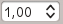

本書で用いる表記
This section describes the uniform styles that will be used throughout this manual.
GUI の表記
The GUI convention styles are intended to mimic the appearance of the GUI. In general, a style will reflect the non-hover appearance, so a user can visually scan the GUI to find something that looks like the instruction in the manual.
メニュー(コンテキストメニューも含む): or
ボタン : Save as Default
ダイアログのタイトル: Layer Properties
タブ: General
チェックボックス:
 Render
Renderラジオボタン:
 Postgis SRID
Postgis SRID
 EPSG ID
EPSG ID数値を選択:

ファイルを探す: ...
色を選ぶ:

スライダー:
テキストを入力:
{kind=link}
{kind=link}
{kind=link}
文字などの表記
本書は、プログラミングについても触れています。 以下は、主にプログラミングをする際の表記になります。
ハイパーリンク: https://qgis.org
複数キーでの操作: Press Ctrl+B, meaning press and hold the Ctrl key and then press the B key.
ファイル名:
lakes.shpクラス名: NewLayer
関数名・メソッド名: classFactory
サーバ: myhost.de
入力するテキスト:
qgis --help
Lines of code are indicated by a fixed-width font:
PROJCS["NAD_1927_Albers",
GEOGCS["GCS_North_American_1927",
OS 特有の事項
本書は、主に Windows ユーザを対象にしていますが、 著者自身が macOS ユーザです。 このため、スクリーンショットはだいたい macOS でとっています。
それぞれの OS に固有のことについては、以下のように注記を記しています。
{kind=link}
{kind=link}
{kind=link}